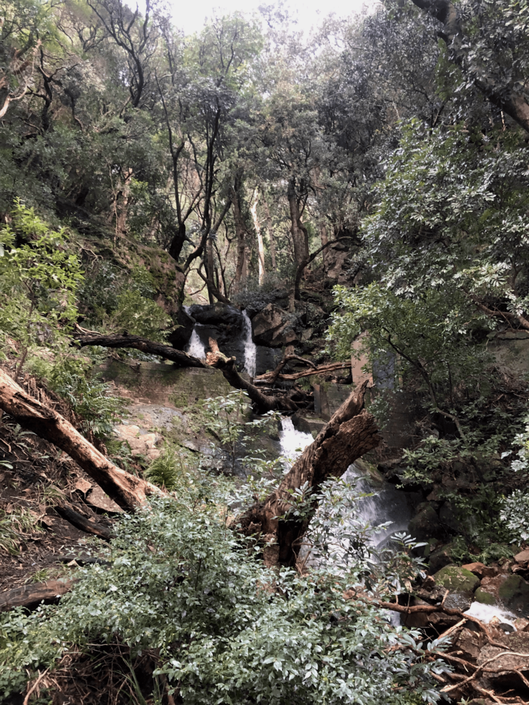

Sonnet to a Wild Olive
I nod my head in deep gratitude
to the aged olive tree, bent and worn,
who, despite the winds, the storms, and the fire,
has found its way through nature’s whims forlorn.
With roots that cling to rocks as if in prayer,
it stands, defying further loss or fate,
and from this vantage, I behold it there,
kneeling now, in humble reverence, straight.
I reach out to touch its rugged bark,
to draw its gaze, to bring it close to me,
and ask it to keep watch against the dark,
as Jesus once roused his company.
And in this meekness, for what lies ahead,
“Let Your will be done, oh Father,” I said.